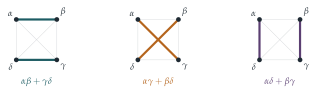

Let \(\alpha\), \(\beta\), \(\gamma\) and \(\delta\) be the roots of the quartic equation \[x^4 + px^3 + qx^2 + rx + s = 0.\] You are given that, for any such equation, \(\alpha\beta + \gamma\delta\), \(\alpha\gamma + \beta\delta\) and \(\alpha\delta + \beta\gamma\) satisfy a cubic equation of the form \[y^3 + Ay^2 + (pr - 4s)y + (4qs - p^2s - r^2) = 0.\] Determine \(A\).
Now consider the quartic equation given by \(p = 0\), \(q = 3\), \(r = -6\) and \(s = 10\).
Find the value of \(\alpha\beta + \gamma\delta\), given that it is the largest root of the corresponding cubic equation.
Hence, using the values of \(q\) and \(s\), find the value of \((\alpha + \beta)(\gamma + \delta)\) and the value of \(\alpha\beta\) given that \(\alpha\beta > \gamma\delta\).
Using these results, and the values of \(p\) and \(r\), solve the quartic equation.
The hook
Every student learns the formula for solving quadratic equations. Formulas for cubics and quartics exist too; they were found in sixteenth-century Italy amid secret contests and bitter disputes over priority. Gerolamo Cardano published both in his Ars Magna of 1545, the cubic from Niccolò Tartaglia (who had sworn him to secrecy) and the quartic from his own student Lodovico Ferrari. Then, for nearly three hundred years, mathematicians searched in vain for a formula for the quintic.
This question shows the trick that solves the quartic, and it is a trick with a deep meaning. Out of the four roots, form three new quantities by pairing the roots up in the three possible ways. Those three quantities satisfy a cubic, which you can solve, and from them the original roots follow. The question why this works, why four roots can be reduced to three quantities but five roots cannot be similarly reduced, is what led Galois to invent group theory.
Before you start
How many ways are there to split four objects \(\alpha, \beta, \gamma, \delta\) into two pairs?
Three: \(\{\alpha\beta, \gamma\delta\}\), \(\{\alpha\gamma, \beta\delta\}\) and \(\{\alpha\delta, \beta\gamma\}\) (Figure 6.4.1). The three quantities in the question, \(\alpha\beta + \gamma\delta\) and so on, correspond to these three pairings. Any rearrangement of the four roots just shuffles the three pairings among themselves, so any symmetric expression in the three quantities is a symmetric expression in the four roots, and can be written in terms of \(p\), \(q\), \(r\), \(s\). That is why they satisfy a cubic whose coefficients involve only \(p\), \(q\), \(r\), \(s\).
Working it through
Stage 1 The missing coefficient
In a cubic \(y^3 + Ay^2 + By + C = 0\), what is the sum of the roots in terms of \(A\)? And what is \((\alpha\beta + \gamma\delta) + (\alpha\gamma + \beta\delta) + (\alpha\delta + \beta\gamma)\) in terms of the quartic’s coefficients?
The sum of the roots of the cubic is \(-A\). The sum of the three quantities is the sum of all six products of pairs of \(\alpha, \beta, \gamma, \delta\), which for the quartic \(x^4 + px^3 + qx^2 + rx + s\) is \(q\). So \(A = -q\).
Stage 2 The specific cubic
With \(p = 0\), \(q = 3\), \(r = -6\), \(s = 10\), the cubic is \[y^3 - 3y^2 + (0 - 40)y + (120 - 0 - 36) = y^3 - 3y^2 - 40y + 84 = 0.\]
Try small divisors of \(84\).
\(y = 2\) gives \(8 - 12 - 80 + 84 = 0\). Dividing, \(y^3 - 3y^2 - 40y + 84 = (y - 2)(y^2 - y - 42) = (y - 2)(y - 7)(y + 6)\). The largest root is \(7\), so \(\alpha\beta + \gamma\delta = 7\).■
Stage 3 Pairs of roots
\((\alpha + \beta)(\gamma + \delta) = \alpha\gamma + \alpha\delta + \beta\gamma + \beta\delta\), which is the sum of all six pair-products minus \(\alpha\beta + \gamma\delta\), that is, \(q - 7 = 3 - 7 = -4\).
Also \(\alpha\beta \cdot \gamma\delta = \alpha\beta\gamma\delta = s = 10\). So \(\alpha\beta\) and \(\gamma\delta\) have sum \(7\) and product \(10\): they are the roots of \(t^2 - 7t + 10 = (t - 2)(t - 5)\). With \(\alpha\beta > \gamma\delta\), \(\alpha\beta = 5\) and \(\gamma\delta = 2\).■
Stage 4 Solving the quartic
Find \(\alpha + \beta\) and \(\gamma + \delta\). You know their sum (from \(p\)) and their product (from Stage 3); to decide which is which, use \(r\).
\(\alpha + \beta + \gamma + \delta = -p = 0\) and \((\alpha + \beta)(\gamma + \delta) = -4\), so \(\{\alpha + \beta, \gamma + \delta\} = \{2, -2\}\). The coefficient \(r\) gives the sum of the four triple products: \(\alpha\beta\gamma + \alpha\beta\delta + \alpha\gamma\delta + \beta\gamma\delta = -r = 6\). This can be written as \(\alpha\beta(\gamma + \delta) + \gamma\delta(\alpha + \beta) = 5(\gamma + \delta) + 2(\alpha + \beta)\). If \(\alpha + \beta = 2\) this is \(-10 + 4 = -6\); if \(\alpha + \beta = -2\) it is \(10 - 4 = 6\). So \(\alpha + \beta = -2\) and \(\gamma + \delta = 2\).
Now \(\alpha\), \(\beta\) are the roots of \(t^2 + 2t + 5 = 0\), giving \(-1 \pm 2\mathrm{i}\); and \(\gamma\), \(\delta\) are the roots of \(t^2 - 2t + 2 = 0\), giving \(1 \pm \mathrm{i}\). The four roots are \[x = -1 \pm 2\mathrm{i}, \qquad x = 1 \pm \mathrm{i}. \qed\] Check: \((x^2 + 2x + 5)(x^2 - 2x + 2) = x^4 + 3x^2 - 6x + 10\).
Looking back
Symmetric functions. Every step used the relations between roots and coefficients: sums and products of roots.
Reduce the degree. A quartic problem became a cubic (the resolvent cubic), and then two quadratics.
Use every piece of information. \(p\) and \(q\) gave the sums and products; \(s\) split \(\alpha\beta\) from \(\gamma\delta\); \(r\) decided which pair went with which sum.
What’s really going on
In 1770 Joseph-Louis Lagrange asked why the methods for cubics and quartics work, and found the answer in the permutations of the roots. There are \(24\) ways to rearrange four roots. Under all of them, the three quantities \(y_1 = \alpha\beta + \gamma\delta\), \(y_2 = \alpha\gamma + \beta\delta\), \(y_3 = \alpha\delta + \beta\gamma\) are merely shuffled among themselves: each rearrangement of the four roots induces a rearrangement of the three pairings (Figure 6.4.1). So they satisfy a polynomial of degree \(3\) with coefficients symmetric in the roots. In modern language, there is a group homomorphism from the symmetric group \(S_4\) (all \(24\) permutations) onto \(S_3\) (the \(6\) permutations of the pairings), and that is why a quartic can be reduced to a cubic.

The quintic
For five roots, Lagrange looked for a similar quantity taking only a few values under permutations of the roots, and could not find one that helped. In 1799 Paolo Ruffini, and in 1824 Niels Henrik Abel (completing the proof), showed that there is no general formula for the roots of a quintic using only arithmetic and radicals. A few years later Évariste Galois explained exactly which polynomials can be solved by radicals: those whose group of symmetries of the roots can be broken down in a particular way into simpler pieces. The symmetric group \(S_4\) can be (via \(S_3\) and smaller groups), but \(S_5\) cannot, because it contains a “simple” piece of size \(60\) that cannot be broken down further. Galois wrote up his theory in a hurry the night before he was killed in a duel in 1832, at the age of twenty. It is now one of the jewels of a mathematics degree, usually met in the third year.
Solving cubics
The cubic itself can be solved by a similar trick: write a depressed cubic \(x^3 - 3px + q\) as a combination of two perfect cubes, which reduces it to a quadratic. That is the method of the 2011 question in the exercises, and it is equivalent to Cardano’s formula. When the cubic has three real roots, the formula still requires complex numbers along the way, the phenomenon that forced mathematicians to take complex numbers seriously (see the introduction to Chapter 5).
The thinking skill
If some quantities built from the roots are only permuted among themselves when the roots are permuted, they satisfy a polynomial of lower degree whose coefficients you can compute.
This is the seed of Galois theory: understand an equation by understanding the symmetries of its roots.
Try this next
Check the cubic. Verify that \(y_1y_2 + y_2y_3 + y_3y_1 = pr - 4s\), where \(y_1 = \alpha\beta + \gamma\delta\) etc. (Expand and use \(\sum\alpha = -p\), \(\sum\alpha\beta\gamma = -r\), \(\alpha\beta\gamma\delta = s\).)
The cubic as a sum of cubes. (From STEP III, 2011.) Show that if \(q^2 \neq 4p^3\) then \(x^3 - 3px + q = a(x - \alpha)^3 + b(x - \beta)^3\), where \(\alpha\), \(\beta\) are the roots of \(pt^2 - qt + p^2 = 0\). Hence show that one root of \(x^3 - 24x + 48 = 0\) is \(x = \dfrac{2(2 - 2^{1/3})}{1 - 2^{1/3}}\), and check this numerically.
Another quartic. Use the method of this section to solve \(x^4 - 4x^3 + 7x^2 - 6x + 2 = 0\). (One root of the resolvent cubic is a small integer.)
Counting permutations. Of the \(24\) permutations of \(\alpha, \beta, \gamma, \delta\), find all those that send the pairing \(\{\alpha\beta, \gamma\delta\}\) to itself. Show that there are \(8\) of them. (They form a subgroup of \(S_4\).)
Further reading
Mario Livio, The Equation That Couldn’t Be Solved (Simon & Schuster). The story of the quintic and the birth of group theory, for a general reader.
Ian Stewart, Why Beauty Is Truth: A History of Symmetry (Basic Books). From Babylonian equations to Galois and beyond.
Ian Stewart, Galois Theory (CRC Press). The undergraduate text, with a historical introduction covering exactly this material.